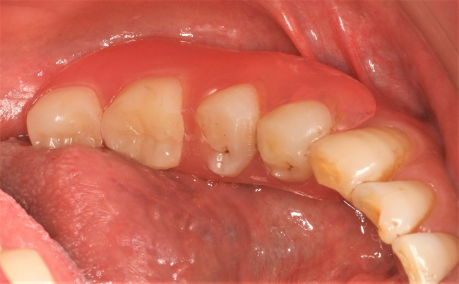

入れ歯の治療 DENTURE
入れ歯は失った歯や歯肉の代わりとなる口腔内装置です。
当然、患者さまの健康維持のためにも必要なものです。
しかし、痛みや違和感が強いなど不満の出やすい装置でもあります。
現在ご使用中の入れ歯はいかがでしょうか？
当クリニックは、保険の入れ歯はもとより様々な特殊な入れ歯にも精通しております。入れ歯は高価な素材を使って作ったからといって良いものが出来上がるわけではありません。
入れ歯でお困りのことがあれば、東大阪市布施駅前の歯科医院おかだ歯科クリニックにお気軽にご相談ください。
■ 保険の入れ歯
保険診療の範囲内で作る入れ歯。使用できる材料に制約がある。
- メリット
- 費用が安く製作日数も短い期間で出来上がる
- デメリット
- 強度に問題があり力がかかるとたわむので痛みが出やすい
- 残っている歯やあごの骨にダメージを受けやすい
- 割れやすいので厚みを持たせる必要があり強い違和感がある
- 金属の止め金（クラスプ）を使うので見た目や舌感に問題がある
■ 特殊な入れ歯
- 入れ歯だと気づかれたくない
- 違和感があり使うのが苦痛
- 入れ歯が外れる
- 話しづらい
このようなお悩みはありませんか？
保険の入れ歯では使えない特殊な材料を使うことで入れ歯のお悩みを解決できます。
スマイルデンチャー
残っている歯に金属の止め金を使わず、特殊な樹脂の弾力で義歯を維持します。薄く、軽く、弾力のあるのが特徴で、入れ歯に見えず笑顔に自信が持てるということでこの名が付きました。
装着前
装着後
スマイルデンチャー
装着前

装着後
- メリット
- 見た目が入れ歯だとわからない
- 小さく軽いので違和感が少ない
- デメリット
- 専用の洗浄剤を使う
- 表面が荒れてくることがある
磁性アタッチメント義歯
ものを噛む能力を高めます。
- メリット
- 金属の止め金が必要ないので、見た目が良い。
- カチッと入れ歯が固定されるので、違和感が少なく、よく噛める。
- 磁力による維持力の調整が可能。
- 根っこしか残っていない歯を抜かずに利用できる。
- デメリット
- 根っこが悪くなると装置として使えなくなる
磁性アタッチメント義歯

装着前
装着後
アタッチメント義歯（クーゲルホックアタッチメントとロケーターアタッチメントの2種）
入れ歯と残っている歯のそれぞれに小さな維持装置を取り付けることによって、入れ歯の安定感やものを噛む能力を高めます。
- メリット
- 金属の止め金が必要ないので、見た目が良い。
- カチッと入れ歯が固定されるので、違和感が少なく、よく噛める。
- 維持力の調整が可能。
- 根っこしか残っていない歯を抜かずに利用できる。
- デメリット
- 根っこが悪くなると装置として使えなくなる
- フィメール部分は使っていると劣化してくるので交換する必要がある
金属床義歯
金属を組み合わせた入れ歯
- メリット
- 強度があるのでたわみが少なく、歯肉やあごの骨にダメージを与えにくいので痛みが出にくい
- 保険の入れ歯より薄いので口の中が広く感じられ違和感が少ない
- 飲食物の温度が伝わりやすい
- デメリット
- 金属アレルギーの場合は不適